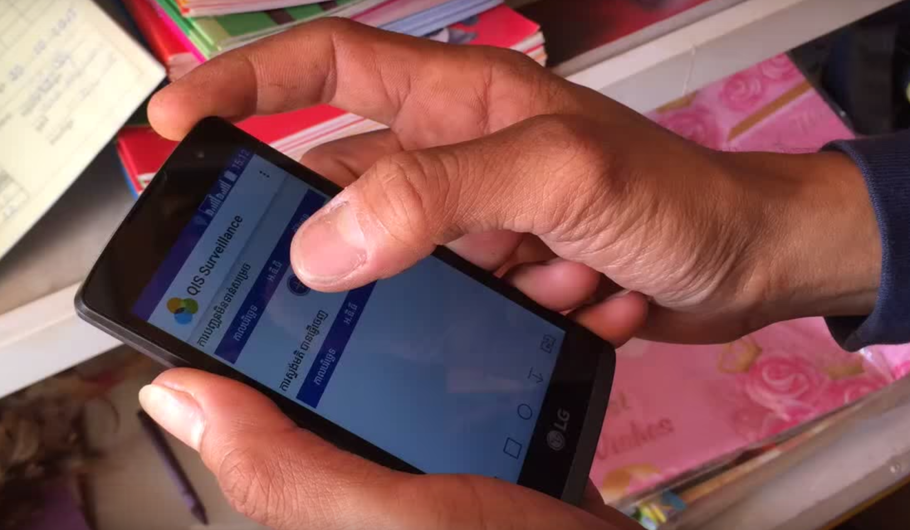

Table of Contents
- 1. Zambia WASH: Mobile surveillance using DHIS2
- 2. PSI: DHIS2 as Management Information System
- About PSI
- Why did you choose DHIS2 at PSI, what drove the decision?
- How did you roll out DHIS2? Was it a gradual process, district by district for example?
- How many PSI countries are using DHIS2 2?
- What are the differences between how PSI uses DHIS2 and how the Ministries of Health do?
- How is DHIS2 making changes to its programs and businesses?
- How do you implement DHIS2? Do you use consultants or local PSI teams?
- Do you provide DHIS2 training to PSI staff?
- Which parts of DHIS2 are you using the most?
- How do you go about customizing DHIS2?
- What’s the general feedback you get on DHIS2?
- How do you help DHIS2 users with the system?
- Do you embed DHIS2 into other apps?
- 3. Tanzania: Integrated Health Information Architecture
Table of Contents
The government of Zambia is actively working towards an end to open defecation—a huge challenge for many governments. Akros is supporting the government in this goal through water, sanitation, and hygiene programs that use mobile surveillance technology at the community level. The community level data collection and feedback system, which relies on DHIS2, has demonstrated that over 2.5 million Zambians have gained access to adequate latrines in rural areas since 2014.
Zambia is a landlocked, primarily-rural country in sub-Saharan Africa. Of its ten provinces, eight are rural. The population relies on a mixture of construction, agriculture, manufacturing, mining, and other sectors for economic prosperity. However, in spite of recent economic growth, as of the 2013-2014 Demographic Health Survey more than half of the population did not have access to improved sanitation facilities.

Water, Sanitation and Hygiene, also called WASH, comprises several interrelated public health concerns such as access to safe water, adequate sanitation, and proper hygiene education. Carefully structured WASH programs can help increase life-expectancy and economic productivity.
Open defecation is a huge environmental health issue in developing countries such as Zambia. Defecating in the open, where flies can fly freely between food and feces, increases the risk of diarrhoeal diseases.
In an effort to eliminate open defecation, Akros has supported the Government of Zambia, UNICEF and other development partners to extend a DHIS2-based WASH data collection platform to more than 20,000 villages. This system enables government officials and local chiefs to monitor progress towards the elimination of open defecation in their wards and chiefdoms in real-time. Village-level WASH data has given local chiefs and government officials the ability to follow-up with specific villages that lag behind in the uptake of latrine construction and use—which, for the first time, has led to multiple open defecation free (ODF) districts in Zambia.
Akros is an NGO that is experienced in the design and implementation of surveillance systems. Akros supports the implementation of WASH programs in Zambia through low-cost feature phones and innovative feedback mechanisms. Akros supports community-level tracking of latrine construction and uptake across nine of Zambia’s 10 districts. www.akros.com.
In 2012 UNICEF began making massive investments in Zambia with its Community-led Total Sanitation (CLTS) program, a methodology for mobilizing communities to completely eliminate open defecation (OD). This program, however, depended on paper records to be collected and physically delivered to the district level from the villages. This process could take 6 months or longer and left UNICEF, partners, and the Ministry of Local Government and Housing with stale and unusable data.
When a Zambian-based consultant introduced the Akros country director to DHIS2, things took a swing in a different direction. DHIS2, or “District Health Information Software”, is a flexible, open source software platform used in more than 40 countries. With the help of dashboards, charts, pivot tables and maps, DHIS2 makes data aggregation and data visualization very easy to create, understand and share. http://www.dhis2.org/
In 2013, Akros implemented its first DHIS2 pilot for the WASH project. Thereafter, the electronic WASH surveillance system was scaled to additional districts with a vision of eliminating OD countrywide. Currently the CLTS project has been implemented in 70 districts using the DHIS2 platform.
Local stakeholders have played a key role in community level sensitization campaigns that highlight the dangers of OD. With guidance from the Government of Zambia and other partners supporting CLTS, at the village level, volunteers form Sanitation Action Groups (SAGs). These volunteers are equipped with CLTS data collection sheets and collect data on household sanitation, trachoma monitoring, and available access to clean water. Typical survey questions cover areas such as the existence of a latrine in a household and if that latrine is equipped with a lid; access to hand washing and water, soap, or ash; access to bathing shelters; the availability and cleanliness of drinking water, and so forth. SAGs work closely with selected individuals called Community Champions (CCs), who collect data from the SAGs and aggregate and submit the data through their mobile phones to DHIS2.

The collected paper-based data is checked by the Community Champions. The data is then submitted via a hand-held device, usually a low-end feature phone that runs a DHIS-J2ME platform, to the next level in the process; the Environmental Health Technicians (EHTs). Thanks to Java technology, the cost of sending data via the DHIS-J2ME platform works out to be ten times cheaper than using standard text messages.
Once a Community Champion submits aggregated data through their mobile phones, this data is made available to all key stakeholders who receive automated HTML performance reports on a given village. The data is then reported to the next level, the village chief, via an Android DHIS2 app.
 |
With the help of a Data Viewing Widget on a tablet, referred to as the “Chief App”, the village chief is able to look at the data that his advisors have gathered and make decisions based on what he sees. The chief holds his headmen accountable for any irregularities that could reduce his influence or impinge his reputation. The chief may at times carry out sanctions against underperforming headsmen, or on the contrary, give incentives, typically in the form of mobile phone credit, to high performers.
 |
At the district-level the CLTS Focal Point Person (FPP), logs on to DHIS2 on a monthly basis to monitor ward and village propagation of improved latrines and progression towards ODF status. This person also shares relevant information with the District Commissioner and Town Planner.
Each ward has a quarterly CLTS meeting to allow representatives from all the villages in the ward to discuss challenges and share successes towards latrine propagation and progress towards achieving ODF status. The event serves to engage the SAGs to continue community sensitization towards achieving ODF status.
On a monthly basis, CCs and EHTs track ODF status of villages in their wards through their mobile phones, and district officials track ODF status of villages through their DHIS2 dashboard. The CC, EHT or district official can select a particular village from a drop-down list, and can see a bar from 0% to 100% indicating the status of that village in working towards 100% ODF.
Once a village achieves ODF and is verified, the District CLTS FPP logs on to DHIS2 and selects “ODF Verified” next to the village’s name, which changes the color of the village name to green.
Zambia is a hierarchical society with strict codes about status. There are roughly 150 chiefdoms. The traditional village chiefs are in charge of all the decisions in the village and very little can be achieved without their approval. They are the custodians of the villagers; ensuring their health and social-economic well-being. Communicating about DHIS2 and obtaining meaningful results required bringing onboard the chiefs within each village. Introducing technology through the means of a tablet was, in some cases, a huge yet surmountable change for certain chiefs.
As the WASH project got underway, a spirit of competition started to emerge amongst village chiefs. Vying for the best results, the chiefs soon became actively involved in overseeing the implementation and follow up of WASH-related activities within their communities. Thanks to automated DHIS2 data feedback loops such as SMS messages, customized dashboards, PDF reports and the Chief’s data visualization widget that could be interpreted extremely easily, even illiterate participants could access the trends and progress of their community’s efforts.
One of the first challenges that came up was to get participants up to speed using mobile phone technology. Initially, participants were given Galaxy smartphones to work with, but this soon proved to be a bad choice. The design of the menus and complexity of certain applications was completely baffling to some. Even typing with a touchscreen was challenging for certain participants, who had never used a touchscreen phone. Also, due to the sensitivity of the touchscreens, participants would inadvertently change the phone settings, such as the keyboard layout to a different language, and not know how to revert the situation. Applications running in the background would also consume too much of the phone’s resources. In sum, due to their limited battery-life, fragile screens, interface complexity and highly coveted appearance, smartphones had to be replaced. Low-tech yet robust feature phones that could run DHIS2 Java-based applications were introduced. Reporting soon rocketed as a result of this turnaround and the progress of the WASH program instantly improved.
Keeping the DHIS2-WASH system simple to use and clear to understand at all levels was the key to its successful implementation. Data collection forms, such as the one in the example below, can be completed very easily by community volunteers who retrieve information in each village.

By keeping data collection sheets simple, by using clear data indicators, this meant that the data entered in to the system was also clear and only critical information was retained. As a result, analyzing and interpreting the data was much more straightforward. Another benefit of using very basic indicators was that any errors that slipped into the data could be spotted and rectified fairly simply.
Akros has created three detailed end-user capacity assessments: the Stakeholder Role Rubric, the CLTS Surveillance Protocol and the CLTS Events Protocol. These documents serve the purpose of defining what each person does within a program so as to avoid ambiguity about responsibilities. Furthermore, the documents help to improve, monitor and assess the implementation of CLTS programs at the different roll out stages.
This document can enable a Community Health Worker to understand the full scope of his or her role. For example, they would know that they would be in charge of decision making in areas covering disease diagnosis, treatment administration, patient referrals, and commodity resupply checks. They would also know about the reporting requirements to follow such as the frequency and method to use.
The Surveillance Protocol is a document that is used to assign monitoring methodologies for each event. It is a detailed analysis of surveillance techniques against each critical event in CLTS deployment. Responsible parties, periodicity, the role of automated functions and manual (surveillance officer) functions are all identified.
Promoting a sense of data ownership amongst participants has a great influence in helping to build up sustainable programs. It is therefore important to develop standard operating roles, by outlining the tasks and duties of every person interacting with the system.
Thus by making participants feel responsible for the data they’re in charge of and by promoting how their role is connected to the successful outcome of a CLTS project, this helps to maintain the flow of communication between all of the levels involved, whether it be at village, ward, constituency, district, province, national or organizational level.
Everything has to be backwards compatible to make upgrades into a smoother process. For example, in 2013, DHIS2 version 2.1.4 was unable to handle the growing volume of users as more and more districts started to use WASH. The system had to be upgraded, due to the number of legacy issues and bugs that were encountered. However, this was not a straightforward task and meant re-installing applications on all devices.
Akros learned that it was beneficial to use clones of production instances as a means to ensure stable implementations of WASH. Upgrades were performed on the cloned instances and then upgrades were applied to the production instances. By proceeding in this anticipatory manner, costs were kept down and troubleshooting was reduced.
Using DHIS2-WASH is one thing; in fact it’s the easiest part. Getting people to use the data in order to drive decision making is the real challenge. To achieve this, Akros made it clear that all participants in a program should understand their role, responsibility and their intrinsic value within the program. Creating a sense of data ownership and a sense of accountability was therefore crucial. For example, by generating DHIS2 reports, district officers had the possibility to make comments about areas of improvement within their district. This information was then forwarded to a provincial coordinator who took action at his or her level.
Lastly, by ensuring that communication channels remained active and were maintained, Akros was able to see how their CLTS program took on more importance and credibility, which in turn generated positive results and recognition in many areas.

[1] Central Statistical Office (CSO) [Zambia], Ministry of Health (MOH) [Zambia], and ICF International. 2014. Zambia Demographic and Health Survey 2013-14. Rockville, Maryland, USA: Central Statistical Office, Ministry of Health, and ICF International.
Table of Contents
- About PSI
- Why did you choose DHIS2 at PSI, what drove the decision?
- How did you roll out DHIS2? Was it a gradual process, district by district for example?
- How many PSI countries are using DHIS2 2?
- What are the differences between how PSI uses DHIS2 and how the Ministries of Health do?
- How is DHIS2 making changes to its programs and businesses?
- How do you implement DHIS2? Do you use consultants or local PSI teams?
- Do you provide DHIS2 training to PSI staff?
- Which parts of DHIS2 are you using the most?
- How do you go about customizing DHIS2?
- What’s the general feedback you get on DHIS2?
- How do you help DHIS2 users with the system?
- Do you embed DHIS2 into other apps?
This interview was conducted in May 2016, with Sarah Romorini, Senior Program Manager at PSI. The aim of this interview was to find out more about how DHIS2 has been rolled out and how it is being used by PSI today. Sarah Romorini has worked with PSI for the past ten years, most recently with the implementation of DHIS 2.
PSI is a global health organization dedicated to improving the health of people in the developing world by focusing on serious challenges like a lack of family planning, HIV and AIDS, barriers to maternal health, and the greatest threats to children under five, including malaria, diarrhea, pneumonia and malnutrition.
Founded in 1970, PSI provides lifesaving products, clinical services and behavior change communication that empower the world’s most vulnerable people to lead healthier lives. PSI works in partnership with local governments, ministries of health and local organizations to create health solutions that are built to last.
More than 8,900 staff work for PSI and its affiliates. Its world headquarters are in Washington, D.C. and its European offices are in Amsterdam. PSI works in more than 60 countries. In 2014, PSI’s revenue was calculated at $631,229,922 USD.
In 2011, PSI began its search for a better Management Information System (MIS). Until then, we’d been using a different MIS in every country and even within countries, different MISs would be used for different projects. We were stuck with highly customized “boutique” systems – that is, unique data collection systems for every project. This was a mix of a Microsoft Excel, Access, and other tools. Programs were cobbling together pieces of information to see trends and analyze their programs. Accessing data like this wasn’t very efficient.
All of these unique, siloed systems led PSI to reflect upon two larger questions: how does PSI want to engage with its information, both locally and globally? And how do we want data to influence both the strategic and everyday program questions that PSI tackles?
During its search for a new, global MIS, several different systems were considered but in the end, DHIS2 was chosen for its ability to collect, manage, and visualize information…in essence, it was the system that made it easier for our programs to collect information and make decisions based off of data. It’s an incredibly powerful and flexible resource!
We were attracted to DHIS2’s ability to collect info on-the-go and the system’s ability to meet different needs. For example, users can set up their own entry forms, indicators and reports. DHIS2 is easily integrated with other interfaces; we especially liked that data collection and monitoring can be adapted for all program areas, including referrals, health services, sales and distribution.
Globally, PSI is making a huge push to make evidence-based decision-making easier for the field, and DHIS2 is a very tangible tool in that sense. Capturing and analyzing real-time data for decision making is appealing and relevant for our field programs and organizationally, it reinforces how PSI’s programs are truly data-driven.
 |
No, we did it in true PSI fashion; we dived right in! We started with two pilot projects that were rolled out nationwide: one in Kenya and one in El Salvador. It was a huge benefit to have a low-complexity country like El Salvador and a high-complexity country like Kenya using DHIS2.
Kenya was PSI’s largest pilot project for DHIS2. All the projects are now reporting on DHIS2. It was a very exciting process, as it was PSI’s first time implementing DHIS2 at scale. In Kenya, there’s a wide range of programs on DHIS2, including malaria, HIV, family planning, social franchising, hypertension, sales, cervical cancer, and others.
In El Salvador, PSI’s reproductive health program was the first to join DHIS2. This helped monitor the effectiveness of interpersonal communication, quality assurance visits, provider performance, and helped the team identify trends and where to direct resources. I was a part of the El Salvador team at the time, and it was incredible to see how program managers and supervisors began using DHIS2 during meetings to illustrate trends, gaps, and program needs.
 |
After setting up our two pilot projects, DHIS2 grew very quickly at PSI…we created demand for this system and needed to meet other countries’ requests to introduce DHIS2. From 2013 until now, PSI has over 20 countries reporting their data using DHIS2 on the production server and several more are in development. Over 60 PSI countries use DHIS2 to report their monthly aggregated health services data. With such a powerful tool, program managers can make better, data-driven decisions, which ultimately translates into improved programming.
PSI and MoHs are using the same MIS, that is to say DHIS2, but they are not using the same server. This means that the information on PSI’s DHIS2 server and the information on the MoH’s DHIS2 server are managed separately. Since PSI and the MoH capture different information, PSI’s is not creating a parallel system to the MoH. However, it enables the potential to share the information gathered by the other. In a few countries, MoHs have access to the information collected by PSI in their DHIS2 2 server.
DHIS2 could be used as just another MIS for data collection, but fortunately it’s used for so much more. What we’re really interested in is seeing the programs using the information on DHIS2 to influence their program decision making.
This is also part of a larger behavior change process to make better use of data and we’re asking ourselves:
How do we make sure that program managers are using this information to direct where resources should be better used?
Who should we target to use information to drive changes within programs and ensure that evidence-based decision-making is being applied?
DHIS2 has enabled us to see how we’re performing in various areas of Behavior Change Communication (BCC). For example, we’ve better visibility on what our Interpersonal Communication (IPC) agents are doing. We can see the number of people that IPC agents have reached, the BCC activities that are taking place, and so forth.
We’re working closely with PSI’s country teams so they feel empowered to use, manage, and analyze their data using DHIS2. During DHIS2 implementations, in-country DHIS2 stars are identified and PSI provides coaching and assistance to empower them to integrate data for decision making—and DHIS2!—into their every day program management.
We also identify local technical leads who can support DHIS2 maintenance and adapt the system to meet their teams’ needs. For example, we’re implementing DHIS2 in Zimbabwe and have an amazing MIS star there. Our team is working closely with him, and he’s learning how to build and do the configuration himself—and this includes some pretty complex integrations. It’s exciting to see how DHIS2 is really owned by PSI Zimbabwe—the data in DHIS2 is theirs and they’re using it. This is the kind of goal we aspire to.
 |
Configuring DHIS2 to meet a country’s data needs takes team work. To do this, PSI collaborates with “DHIS2 builders,” who do the technical configuration work…that is, building the DHIS2 system to match the DHIS2 blueprint, which is based on the PSI country team’s data use needs.
These DHIS2 builders are often HISP agencies in India, Vietnam, Uganda, West Africa, and Colombia. We also work with BAO Systems, the largest US-based DHIS2 consulting and hosting firm in North America, for configuration support.https://baosystems.com/ As I mentioned before, we are also training PSI’s local DHIS2 stars to lead configurations.
To make sure DHIS2 configuration work meets PSI’s standards, DHIS2 builders are supervised by PSI’s DHIS2 Architects. The DHIS2 Architects are an important part of our team and are specialized PSI DHIS2 experts—they not only make sure PSI’s DHIS2 configurations are high quality, but they also train local DHIS2 stars and help DHIS2 builders to learn PSI’s standards so our configurations become more efficient.
As part of our long-term sustainability goals, we’re offering more training opportunities for local PSI staff on DHIS2 administration and data use using DHIS2, as well as for DHIS2 builders so they familiarize themselves with PSI standards. Before, we would create these trainings a little on the fly because there were fewer countries, but now we’re starting to create more standard, ready-to-go training resources. This helps us to save time and improve our curriculum based off of experience—this is also part of our strategy to reach scale.
We also send PSI staff to the introductory and advanced trainings that HISPs offer.
Probably the aggregate data forms. But I’d like to see PSI using Tracker even more….it’s an incredibly flexible tool! More and more countries are using the DHIS2 tracking feature. You can look at individual data, register individual cases, track individual cases and then conduct surveys. This means that you can capture detailed information and then analyze this information, to get the bigger picture about what’s going on.
Within PSI, we have a large network of franchised clinics and there are ongoing discussions about the direction we want to take with electronic medical records and Clinic Management Information Systems. So…whatever solution we’re proposing needs to be DHIS-2 compatible. Now we’re at the point where we’re asking ourselves: What’s DHIS2’s limit?
Right now we’re focusing on strengthening how we implement DHIS2 and the process we use. We’re identifying what needs to happen and when, and the information we need to understand how the PSI country team will use DHIS2. Each country has its unique configuration, but there are core business processes that remain the same. So we’re identifying how this connects to the information that we need to see and the decisions that we need to make.
It’s an incredibly powerful tool, but it’s not necessarily intuitive to create your own form or how you create your own dashboard. Sometimes that can be a barrier for PSI country teams to make full use of DHIS2. We’re looking to make that easier, and we’re identifying who really needs to be able to do what with DHIS2. For example, does a senior manager really need to create her own dashboard, or is it OK that someone else does it for her, if she can access and see her dashboards? Based off of this, we can understand who needs to be trained on what.
We’ve recently transitioned to BAO Systems to help PSI to field its Help Desk tickets. For example, if a user gets stuck with a dashboard query, they submit a ticket through the Help Desk, which is mainly answered by BAO, with support from PSI’s DHIS2 Architects. We try to have a local DHIS2 administrator in each PSI country we work in; this person can usually field basic questions, like how to reset a password, or intermediate ones, like how to create a new form. Questions in the Help Desk range from basic to advanced, like reporting a bug, which may need to be sent to Oslo.
Absolutely! In addition to using DHIS2 as our MIS, PSI develops custom reports and apps to make real time data collection and analysis even easier. Different apps address key strategic and technical areas, including franchise management and provider performance, improving network quality, and case surveillance (such as malaria). All the information collected via apps is directly pushed into DHIS2. Analytics are automatically updated, giving users real-time information and visual analytics that makes data-driven decision making easier.
The HNQIS app was developed by PSI with the aim to improve network quality and provider performance. It’s an impressive app that responds to a very real program need: How do we improve the quality of care that providers deliver more effectively? It helps Quality Assurance (QA) officers plan their supervision routes and target low-performing providers with high client volume. QA officers use PSI- and MoH-approved checklists in the app to conduct assessments with PSI’s providers. QA officers can easily monitor trends in network quality and identify how best to allocate their time and resources to improve their providers’ performance. This app can be used both on and offline.
 |
This is a really simple and elegant app and has a lot of potential—it’s being used in Cambodia to quickly report positive malaria cases in almost real time. It’s super intuitive, so anyone who can use a smartphone can use it. Pharmacists and other health providers use this app to collect basic data points - like geographic location, type of malaria detected and age/gender of the client. This information helps PSI and our partners to track malaria cases, identify outbreaks and re-direct resources to where they are most needed. Check it out—it’s on Google Play.
|  |
Table of Contents
In this use case, we'll be looking at the different stages of how multiple teams collaborated with the University of Dar es Salaam (UDSM), the Ministry of Health and Social Welfare (MoHSW), and the University of Oslo (UiO) to implement integrated Health Information Systems (HIS) in Tanzania Mainland.
The key lessons learned were the importance of implementing a HIS gradually to provide a sustainable framework; streamlining resources and promoting collaboration; ensuring systems were flexible; promoting data ownership and data sharing; building capacity at all levels; involving major programs very early; and dedicating time and resources building up a community of stakeholders.
The United Republic of Tanzania is the largest country in the East African region with a population of 45 million people. It's composed of two countries: the semi-autonomous island of Zanzibar and Tanganyika, or Tanzania Mainland. Tanzania Mainland is divided into 25 administrative regions that are subdivided into 167 district councils. Each district council is subdivided into divisions, wards, villages/streets. There's approximatively one health facility per 8.000 people.

Owing to a huge disparity between regions and districts in terms of geography, history, population, and infrastructure, some areas of Tanzania have no reliable roads, electricity, or access to the Internet. [3]
Tanzania Mainland's first HIS began in the 90s as a paper-based system used at health facilities and district offices. Information was collected and processed with a Microsoft Access database. Without the intervention of external consultants hired by funding agencies, there weren't any strategies to sustain the system with upgrades or refresher training.
With a surge in demand for a HIS, the MoHSW was being put under strain. Lack of coordination led to fragmented vertical projects running side by side. This caused an unsustainable situation in which efforts were being duplicated as results weren’t being converged.
Around 2007, a plan called the Monitoring and Evaluation Strengthening Initiative was made by the MoSWH, UDSM, UiO and other partners. Its goal was to build a new, integrated HIS to provide reliable data for the ministry and other stakeholders. A new paper-based system combined with DHIS2 was introduced. http://www.dhis2.org
In 2010, the adaptation and implementation of a totally revised HIS began. This process was enabled by a flexible, standard solution and participatory approaches operating across all levels of the national health system. It was important to find a solution that would meet the demands of health managers, implementers, designers and decision-makers.
In 2011, the coastal region of Pwani was used as a testbed for paper-based data collection tools and DHIS2. Over the next two years, revised systems were rolled out to the remaining 24 regions and associated districts and health facilities of Tanzania Mainland. On completion of this rollout, efforts were directed towards the integration of all major vertical programs such as malaria, TB/leprosy, RCH, HIV/AIDS into DHIS2. Along with the implementation process, training programs were held for implementing partners, district and regional hospital staff, and the MoHSW staff.
 |
Here are some of the key areas we dedicated time and resources to:
The choice to apply open-source tools rather than going through a closed, commercial product ensured that the software remained collaborative with a more diverse and flexible scope of design. Furthermore, the involvement of the many health sector stakeholders and an open source community of developers implied that the system would be geared towards long-term sustainability rather than a short-term lifecycle, dependent on a company’s paid maintenance services.
DHIS2 was implemented in an incremental way, rather than in one go. Like that, issues could be tackled directly during the rollout process, and implemented in direct response to user feedback. The most glaring flaws were thus easily spotted and a more stable and efficient system was built.
We used a set of common data collection standards that covered data collection, reporting, analysis, and quality procedures and tools. All informal tools were removed and the recording of duplicate entries of data declined.
A community of users such as managers from the HIS, supporting partners and implementers exchanged emails, spoke on forums, and at workshops about how to make the software more user-friendly. This helped implementers fine-tuned their programs and ensure that DHIS2 was being used optimally.
Students enrolled on PhD and MSc degree programs at UiO and UDSM conducted “action-led research” that enabled them to participate in the roll-out of DHIS2 while doing research. By doing so, they learned and documented best practices about system customization, user support, training, and data analysis.
People learned to troubleshoot DHIS2 software, and users were encouraged to assist each other across many different organization levels and roles. By instilling a sense of ownership and self-sufficiency, the gap between implementers and users was thus reduced. Training focused on software usage, data analysis and basic and advanced features of DHIS2 for health and data managers.
To drive decision-making and to reach national health goals, annual planned targets, and Millennium Development Goals (MDGs), teams created processes on how to generate and use data efficiently.
Since 2014, DHIS2 has been integrated with other software systems, enabling health workers to cross-cut, analyze and share data across organizations. Here are some examples of systems integrated or made interoperable with DHIS2:
eIDSR was developed from scratch using USSD technology and linked with DHIS2 for the immediate reporting of data on infectious diseases. The tool is designed to improve detection and response time to diseases and is used within all health facilities in Tanzania.
HRHIS was developed to report health data information from within all Tanzanian health facilities. It has helped to assess HR problems, manage the distribution of HR, and plan and evaluate HR interventions.
MFL is a health facility register to keep records about health facility profiles.
eLMIS is a supply chain system for distributing and stocking of drugs and other commodities.
Solutions to raise awareness about best practices for data use, data analysis and data dissemination have been embedded within DHIS2. These solutions are:
Scorecards are used to communicate the status of progress toward key global, regional and national commitments for specific indicators. The representation of visual indicators has the role of stimulating actors to respond to situations rapidly through effective policies and investments.

The HMIS web portal is hosted by the MoHSW and used by health stakeholders. It’s also accessible to the general public. https://hmisportal.moh.go.tz/
 |
Rewards the delivery of one or more outputs or outcomes by one or more incentives that can be financial or otherwise. The P4P/RBFprogram is integrated within DHIS 2 to enable health service providers to monitor their performance and payments.
Provides planning and progress guidance to the district health management team. For example, it offers a summary of district health conditions through priority health indicators that reflect the district health status of the population, status of the health systems and the status of the health services delivery.
As with any big project being implemented on such large scale and with a complex health care setting, a number of challenges arose.
District and regional administrative boundaries are frequently updated. The foundation of a new region generates a new representation of local population data. This disruption has an impact on the comparative analysis of HIS data such as the performance of health indicators.
Reducing the amount of existing standalone programs was often achieved through demonstrating the limitations of individual programs, and highlighting the potential of DHIS2. Due to some reservations however, some vertical programs are still running in parallel with DHIS2.
Now an endorsed and standard system of choice throughout Tanzania, DHIS2 is recognized as follows:
An integrated e-health architecture that has strengthened health data collection, improved the analysis, use and harmonization of data and stakeholders.
Over 1.5 million data entries are being collected and added to the national data warehouse on a monthly basis, using modems, broadband LAN and VSAT.
Multiple, reliable, integrated tools to assist in improved evidence-based decision making (such as scorecards, dashboards, P4P).
Open access initiative (HMIS web portal) initiated by the community of stakeholders.
Improved data validation and quality checks for better monitoring and evaluation of health programs.
Here are some key lessons to take away from the experience of rolling out DHIS2 in a sustainable way.
The systems must be flexible and adaptable to meet emerging needs. By learning from previous iterations it has been possible to extend the system to other regions.
To save on resources and prevent running the risk of duplicating efforts, before deploying DHIS2, streamline all resources and HIS activities of all stakeholders and use the MoHSW as a lead organization.
Promote system and data ownership within the MoHSW. Encourage data sharing amongst the health programs and stakeholders to help develop a sense of trust in the routine HIS and the resources and capacity that can support it.
A reliable system is maintained by well trained and knowledgeable people. Capacity building needs to be a continuous strategy. Capacity is needed for system development, maintenance, and information use to make sure the system is up and running every day, and information generated is used for health management, planning and decision making.
The major health programs are HIV/AIDS, Maternal Child Health (MCH), malaria and TB. Getting such big programs as these involved in a HMIS at an early stage is a means to spark the interest of other programs and associated stakeholders.
Lots of time and effort was spent integrating the vertical programs into the HIS/DHIS2 platform and gradually rolling out the HIS. Today we’ve established a large community of stakeholders who share a common interest in building a sustainable HIS/DHIS2 platform for future generations to use and build upon.